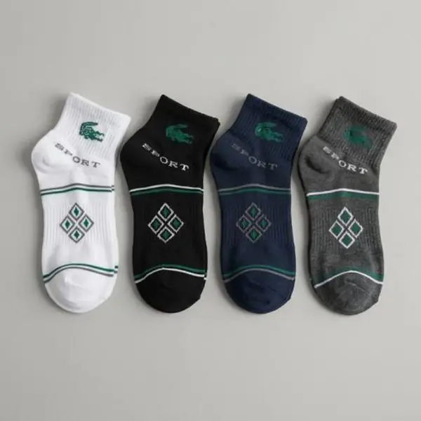
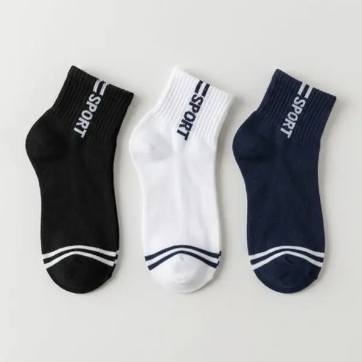
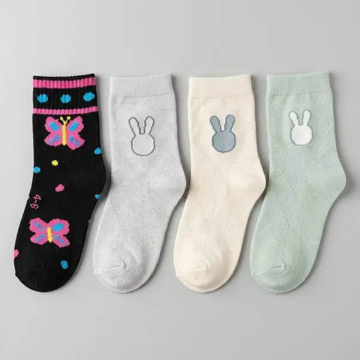
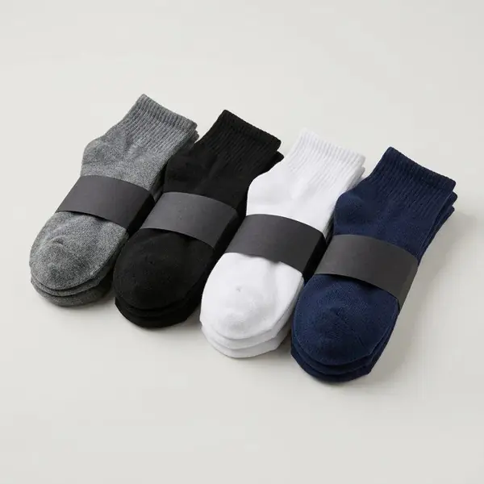

Canilleras, tobilleras y taloneras: ¿qué tipo de medias elegir?
Aprende la diferencia entre medias canilleras, tobilleras y taloneras y elige la altura ideal según tu calzado y tu día a día. Guía de MCJ en Loja.
Por MCJ Distribuidores · · 3 min de lectura

Los niños pasan muchas horas con el mismo calzado: caminan, corren y juegan. Unos buenos calcetines hacen que la jornada sea más cómoda. Esto es lo que conviene revisar.
Es lo primero. Una media apretada incomoda y una holgada se arruga. Consulta nuestra guía de tallas para acertar.
Revisa el reglamento del colegio: algunos piden canilleras y otros permiten tobilleras. Si tienes dudas, lee la diferencia entre canilleras, tobilleras y taloneras.
Busca un tejido suave y sin costuras que rocen el pie, sobre todo la punta. Los niños se quejan poco, pero una costura molesta se nota en su ánimo.
Elige los colores que pide el uniforme, y ten en cuenta que los oscuros disimulan mejor el uso y las manchas.
Los calcetines escolares se ensucian y se pierden. Tener varios pares te da margen entre lavados. Un tripack o una docena es una buena forma de dejar todo listo.
En el catálogo de MCJ hay medias para niñas y niños en varias tallas. Escríbenos por WhatsApp y te ayudamos a elegir.

Aprende la diferencia entre medias canilleras, tobilleras y taloneras y elige la altura ideal según tu calzado y tu día a día. Guía de MCJ en Loja.

Cómo elegir la talla correcta de medias para bebés, niñas y niños: cómo medir el pie, señales de talla incorrecta y qué tallas manejamos en Loja.

Descubre cuándo conviene comprar calcetines por unidad, tripack o docena en Loja y cómo pedir tu docena por WhatsApp de forma rápida con MCJ.